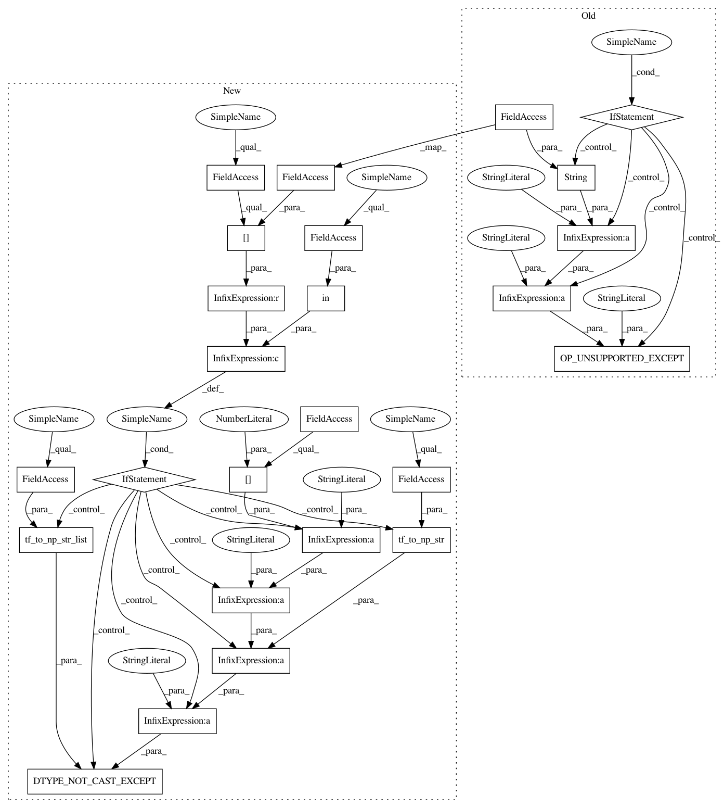

9c62f4f3d7c6b98f311ef82863281b088ce4d48a,onnx_tf/handlers/backend/clip.py,Clip,args_check,#Any#Any#,16
Before Change
x = kwargs["tensor_dict"][node.inputs[0]]
// uint64 cannot upcast to any tensorflow supported datatype
// for tf.clip_by_value that didn"t lose precision
if x.dtype == tf.uint64:
exception.OP_UNSUPPORTED_EXCEPT(
"Clip input, min and max in " + str(x.dtype) + " datatype",
"Tensorflow")
@classmethod
def _common(cls, node, **kwargs):
tensor_dict = kwargs["tensor_dict"]
x = tensor_dict[node.inputs[0]]
After Change
// throw an error if the data type is not natively supported by
// Tensorflow, cannot be safely cast, and auto-cast option is False
if x.dtype in cls.cast_map and cls.cast_map[x.dtype] is None:
exception.DTYPE_NOT_CAST_EXCEPT(
"Clip input " + node.inputs[0] + " with data type "" +
data_type.tf_to_np_str(x.dtype) + """,
data_type.tf_to_np_str_list(cls.supported_types))
@classmethod
def _common(cls, node, **kwargs):
tensor_dict = kwargs["tensor_dict"]
x = tensor_dict[node.inputs[0]]
In pattern: SUPERPATTERN
Frequency: 3
Non-data size: 25
Instances
Project Name: onnx/onnx-tensorflow
Commit Name: 9c62f4f3d7c6b98f311ef82863281b088ce4d48a
Time: 2020-10-02
Author: chhuang@us.ibm.com
File Name: onnx_tf/handlers/backend/clip.py
Class Name: Clip
Method Name: args_check
Project Name: onnx/onnx-tensorflow
Commit Name: c74883931cb40748eaaccce9fd1117303c41a881
Time: 2020-08-26
Author: chhuang@us.ibm.com
File Name: onnx_tf/handlers/backend/cumsum.py
Class Name: CumSum
Method Name: args_check
Project Name: onnx/onnx-tensorflow
Commit Name: 9c62f4f3d7c6b98f311ef82863281b088ce4d48a
Time: 2020-10-02
Author: chhuang@us.ibm.com
File Name: onnx_tf/handlers/backend/clip.py
Class Name: Clip
Method Name: args_check
Project Name: onnx/onnx-tensorflow
Commit Name: c74883931cb40748eaaccce9fd1117303c41a881
Time: 2020-08-26
Author: chhuang@us.ibm.com
File Name: onnx_tf/handlers/backend/equal.py
Class Name: Equal
Method Name: args_check